k-Day 034｜甜水鎮
早上六點半冷醒，原來暖氣不知何時已經關機了。下樓問櫃檯妹妹哪裡可以買早餐，他說兩邊都有餐車。昨天下橋後就是繞進這個地方找到吃的住的，沒想到還能吃到早餐。
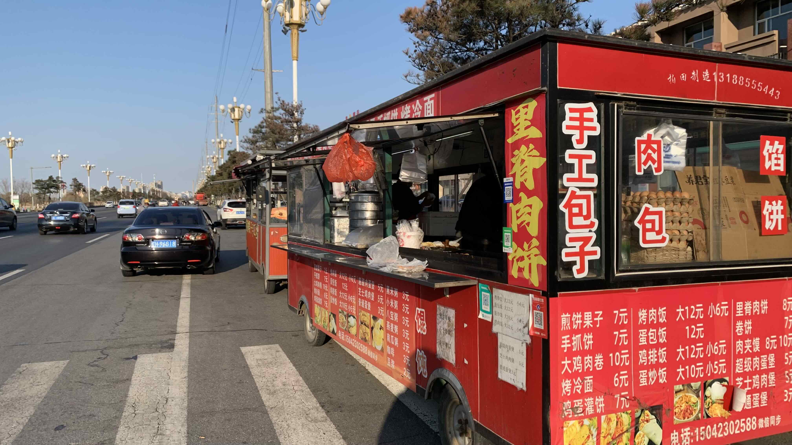
看起來乾淨又衛生。老闆正在裡面桿麵皮，因此買了兩個包子，又追加一份豆漿。
包子4.5，豆漿5.5，因此給了10元。
趕著回房間品嚐，已經走遠了，突然聽到後方有人大喊：「你的錢！」回頭一看，老闆竟然跳下餐車追出來，手上高舉著五元紙鈔，說：「包子豆漿5元，你給10元，要找5元！」接過老闆手中的紙鈔，滿口道謝，心中感激他沒有把我當過路的盤子對待。她回頭走向餐車的背影有光。
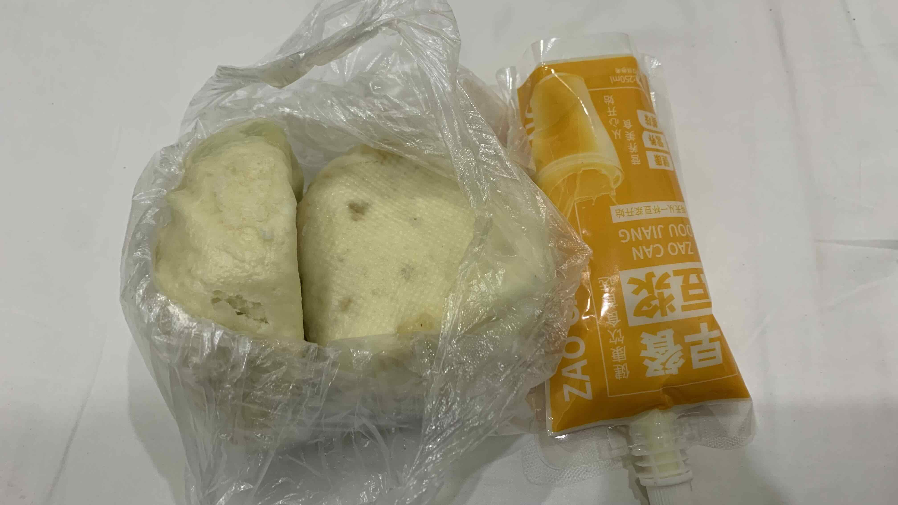
回到房間打開塑膠袋觀察一下，可以確定包子是手工的，裡面的豬肉餡是調味過、剁碎了的。韭菜當然也是剁碎的，無需贅言。口感上吃不出來，不過裡面點綴了少許黃色炒雞蛋，起到配色的作用。麵皮不是有筋性的那種，也吃不出麵香和甜味。內餡的份量跟前幾天吃的東西一樣，都是用澱粉充場面的。喝了兩大口豆漿。是粉調的風味豆漿。
伴著風味豆漿把最後一口包子吞下，突然一陣反胃，連同胃酸一起湧上喉嚨。看來乾淨的胃還是不習慣這類食物。
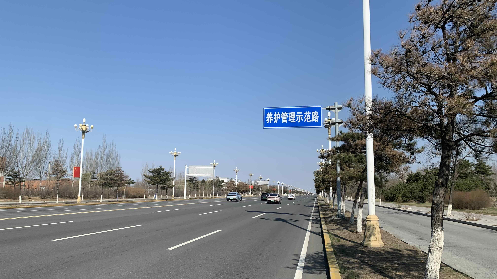
出房間準備退房時，飯店老闆已經在等著我了。眼神興奮異常，跟著我下樓後，主動說要幫我扶著車讓我裝馬鞍包。老闆好奇接連問了我來的路線、騎多久了，要騎到哪裡，老闆娘則在旁邊笑著說：「他看到這車很羨慕！」老闆也笑說：「都還沒出國騎過車呢！」告別老闆夫婦後，推著車遠遠地還聽得見他倆談笑的聲音。幫笑聲拍張照，老闆的人生已經有值得守護的事了。
左轉接回向海大道，往奉國寺的方向前進。這條路平整得值得稱讚。配得上「養護管理示範路」的標誌。
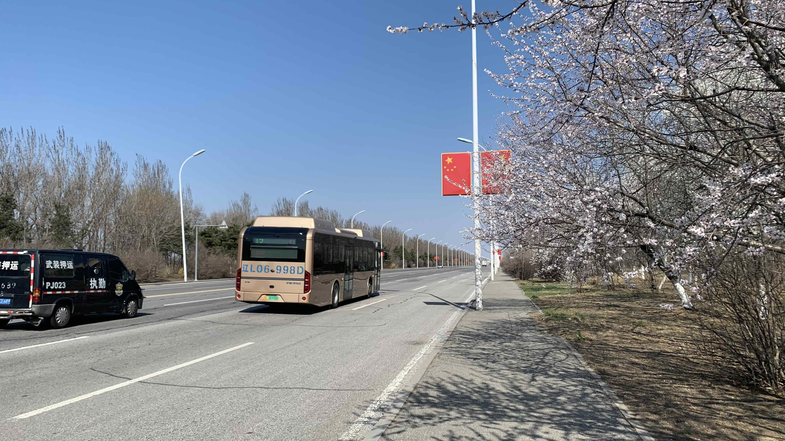
沿路的櫻花都開了，在這麼大條的路上賞花著實愜意。
天氣好到天空自己藍成一種漸層了。
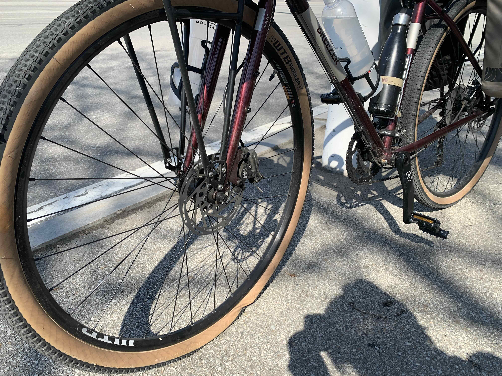
才剛在心裡讚許路況，整台車突然左搖右晃，出發10公里就爆胎了。
卸下所有行李，拿出珍藏的備胎，拆下前輪在路邊辛苦換胎。兩位包著頭巾正巧在路邊蒐集不知名植物的姐姐穿過樹叢走過來，其中一位關心地問道：「你車怎麼啦？」「爆了？」轉過頭跟也在我面前，明顯聽得到我說話的另一位轉述：「他車爆了！」「那得有工具才能修啊！」說完兩人笑著離開。
幾分鐘後兩位大爺騎著淑女車經過，其中一位大爺遠遠地就大聲和我說了些什麼，我抬頭想聽清，他們並沒有停下車，而是爽朗地笑著揮揮手揚長而去。
待輪胎換好，重新裝上前叉後，在路邊搜集植物的兩位姐姐從另一個方向又回來了。我正想和他們打個招呼的時候，啪地一聲他們的推車好像出了狀況。只聽到其中一位姐姐說：「剛剛說他的車壞了，別我們的也壞了。」
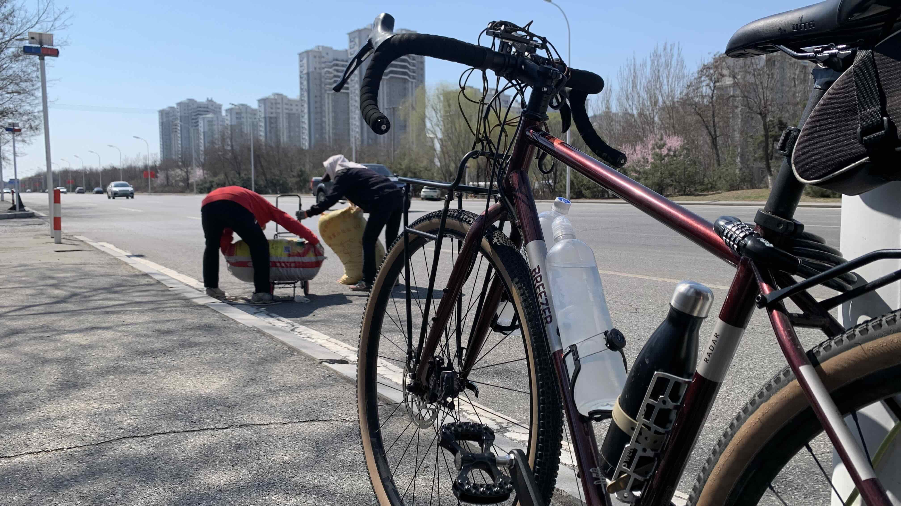
兩位大姐似乎有點尷尬沒有回頭看我，我也不好打擾正在處理推車的他們，於是繼續沿著同一條路騎。騎了好一陣子，騎到快睡著了，怎麼眼前的風景好像沒變過？看看手錶，竟然已經30公里了。
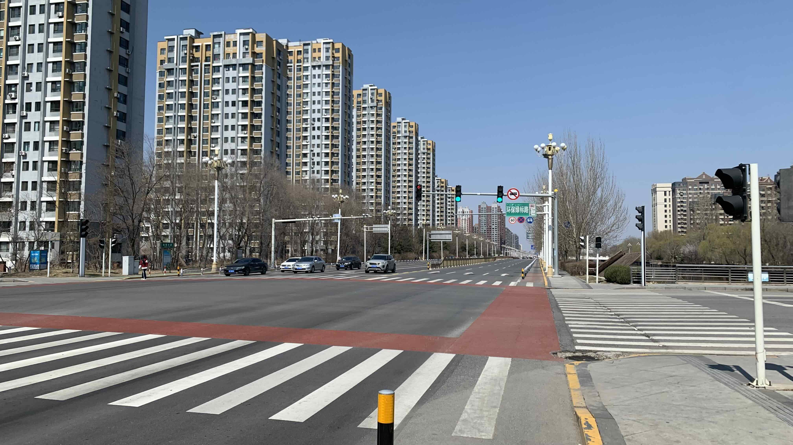
看了三十多公里一樣的路面後，來到了一個有良善自行車道的城市。此處不僅道路平整、有完善的交通號誌，更難得的是沒有人闖紅燈或者亂按喇叭。
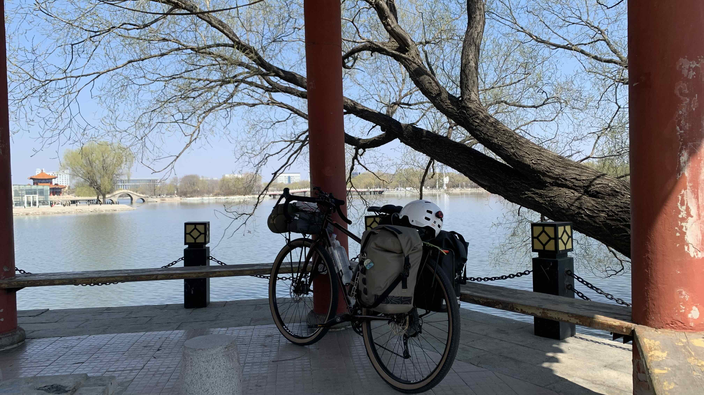
自行車道沿著叫做「東湖」的湖面兩岸鋪設，在湖邊找到一座涼亭，於是牽著車坐下看著湖面和柳樹。這裡的柳樹長得和洛東江的不同，枝條似乎更柔軟，姿態更張狂一些。湖邊沒有鴨子，相當意外。抬頭看了看，涼亭上方寫著木蘭詩，但是這個湖和周遭的景色柔軟地讓人聯想不到黃河流水和燕山胡騎聲。
吃幾個蛋白餅乾，這兩天又冷了，沒辦法坐太久。
在良好的自行車道上看到許多騎自行車的人。正想著應該趁此多買一條備胎，才不至於某天淪落到在路邊補內胎的窘境。捷安特竟然出現在眼前！立刻過馬路詢問老闆，可惜老闆說這個尺寸這裡沒有。不過再往前一公里左右就有一間美利達，也許會有。
找到美利達門口，問了正在修車的人是否有45c的內胎，可惜沒有。旁邊應該是顧客的兩位似乎叫了真正的老闆出來，老闆看了一眼立馬說我去幫你找找，於是坐在門前長凳的大哥就開始跟我聊了起來。除了詢問路線，免不了的終於出現「快了！就快統一了。」這類言論。
過不了一會兒，老闆開心地拿著一條全新的外胎出來，說幫我找到了。其他三人和我異口同聲地説：「是要內胎啊。」老闆笑著說：「我再去找找。」
此時又加入一位大哥，問了我接下來去哪裡，我說去奉國寺。沒想到大家都露出「嗯，可以看看」的表情，原來是熱門景點嗎？待老闆拿出內胎後，話比較多的大哥和我要了網站，拍了張合照，但是照片怎麼傳給我呢？我說上面有我的信箱。大家又說我可以辦個微信抖音之類的。
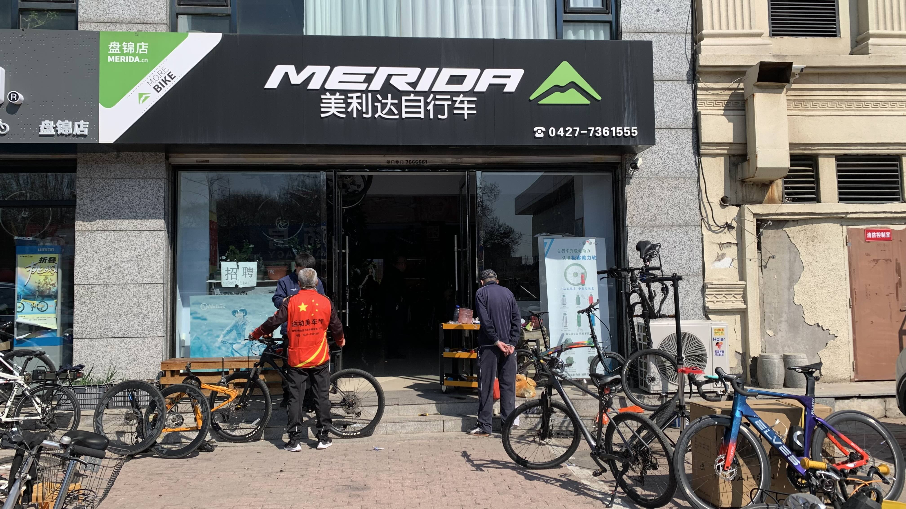
拍一張店門口的照片。收下大哥們的旅途祝福，揮手道別後往義縣的方向繼續前進。
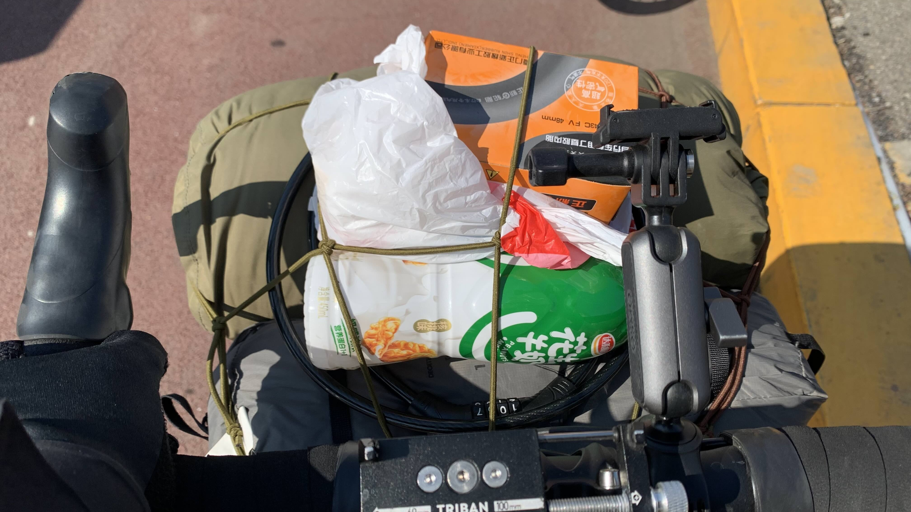
昨晚把車子放在旅店大堂，晚上焦慮地睡不著覺，早上騎車昏昏欲睡地，沒想到獲得新的備胎後腳程突然輕快了起來。
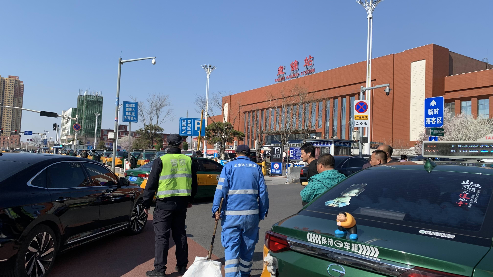
從早上九點到下午四點左右，車道旁一直都有照片中那樣穿著藍色制服的清潔人員，有的走路，有的騎三輪電動車，期間還看到幾輛街道清掃車。
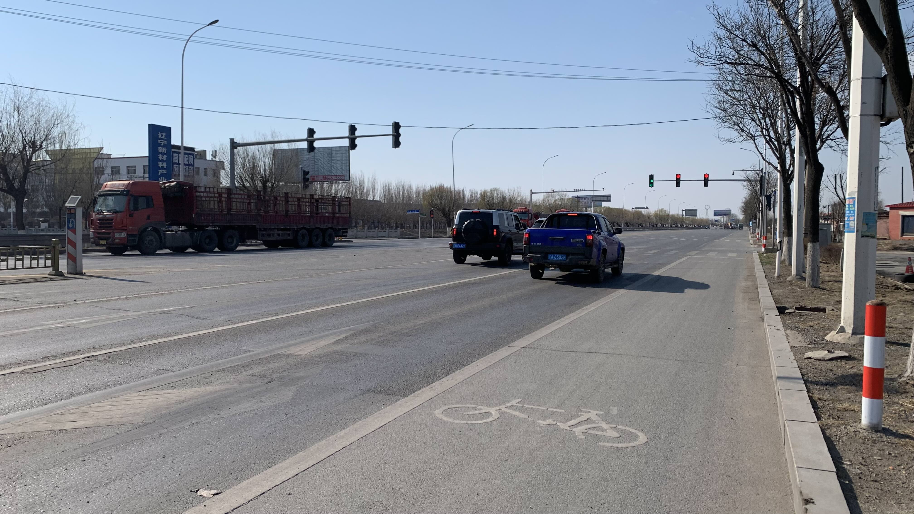
良好的自行車道延伸了這麼遠的距離。盤錦市的市長是誰呢？大連市或許可以來觀摩見習一下。
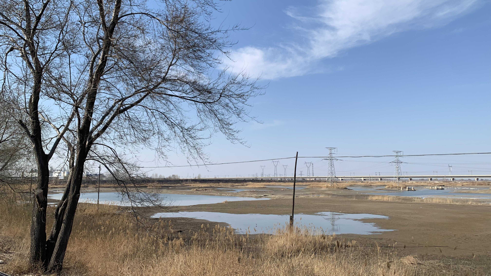
今天經過的路邊濕地也沒有垃圾了。難道真的過了一條看不見的線，生活會產生那麼大的差別嗎？

就這樣一路往前騎，正當我在長長的305國道上放空時，幾個大字從我右邊的眼角餘光掃過。在路邊急急剎車，驚訝地跳下車倒退著往回走了幾步。
這看板上寫的是「甜水」嗎？
就是在首爾前一晚住的那個旅店，櫃檯的老人說的，她的故鄉「甜水」嗎？？？！！！
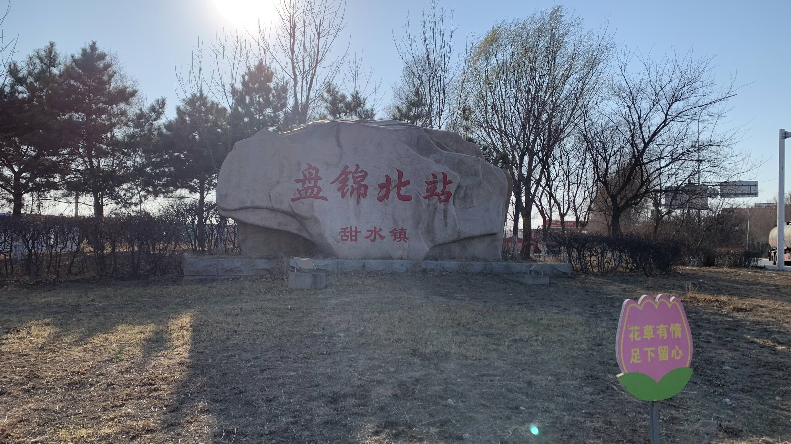
沒錯，我在下午四點半左右抵達了遼寧甜水。一個我此生只聽過一次，但應該永遠不會忘掉的地名。
早上出發時手機只是隨手點了一個在路程中間的旅店，想著今天能騎到就住在這，從來沒想過自己就這樣來到甜水鄉。老人的故鄉應該不記得他了，說不定他也並不想再回來。
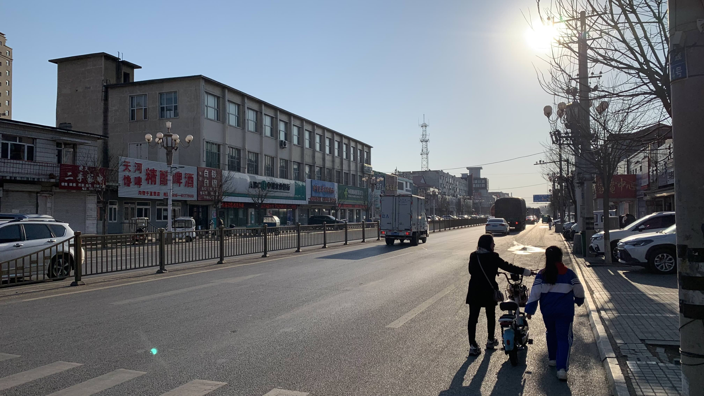
繼續往前騎了一點路，就來到了溝幫子市區。今天的規定是必須找到80元以下的住宿，否則晚餐只能吃蛋白粉。
在網上搜尋了一家酒店，進門問了價格。老闆說單人房本來是一百的，但是願意給我80元。自行車呢？可以停在一樓的餐廳鎖著。
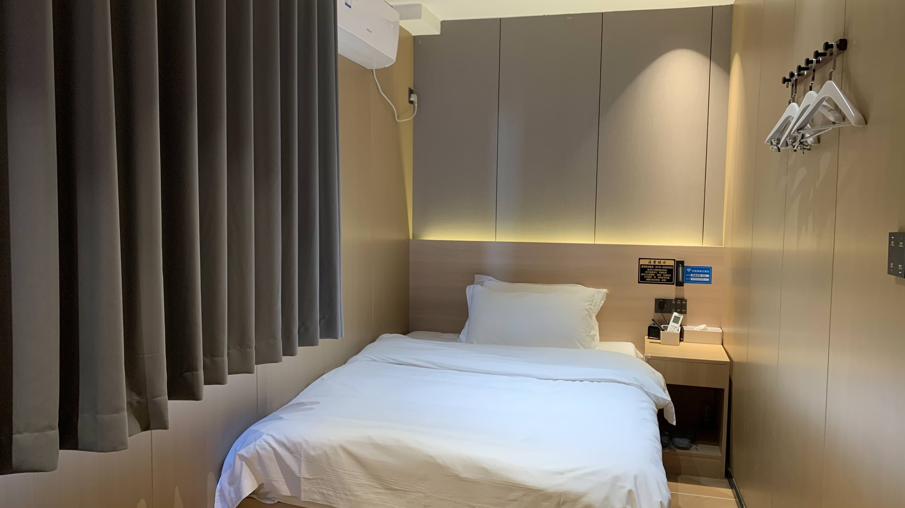
房間相當乾淨整潔，還有久違的智能馬桶。
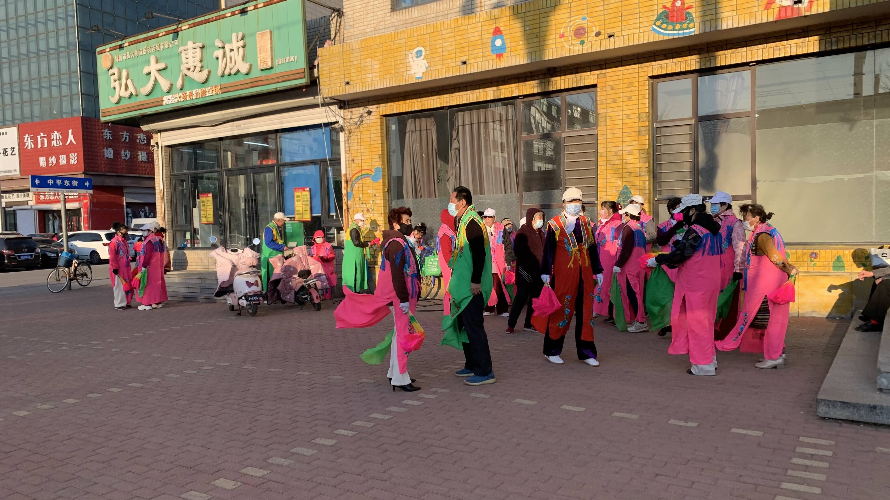
放下行李換掉濕透的騎行服，下樓問老闆有啥好吃的。老闆推薦了轉角巷子裡的餐廳，路過一群跳舞的大哥大姐們。

走進朋友的小孩經常說想喝的蜜雪冰城，原來是賣飲料的。點了一杯8元珍奶，付了二十元紙鈔。店員又找了兩枚硬幣和一張裂成3片，用膠帶黏起來的10元給我。這次我直接退給他說：「請給我換一張。」
拿了熱珍奶和找回的10元紙鈔，驕傲地走進旁邊的餐廳。問店員什麼好吃，他推薦了羊雜麵，還加點一份手撕豬心。

第一次吃羊雜麵，吃了幾口我就可以斷言，這麵是我今生吃過最好吃的羊雜麵。熱騰騰的湯頭散發著花椒的香氣，麵條彈性十足，搭配香菜的清新和花生爽脆，簡直絕妙組合。「如果沒辦法買到左營毛伯伯牛肉麵，我會選他。」我心裡是這麼想的。手撕豬心是為我的肌肉們準備的優質蛋白，洋蔥、青椒和花椒涼拌，清脆爽口，但對我來說有點鹹，剩下一半打包回酒店當宵夜。
今天無論是心境、換胎技術，買東西、找住處和食物等等，都越來越熟悉。從威海到錦州，我終於徹底升級了。
今日花費： 早餐 5、飲水 12、珍珠奶茶 8、晚餐 手撕豬心+大羊雜面 29、住宿80